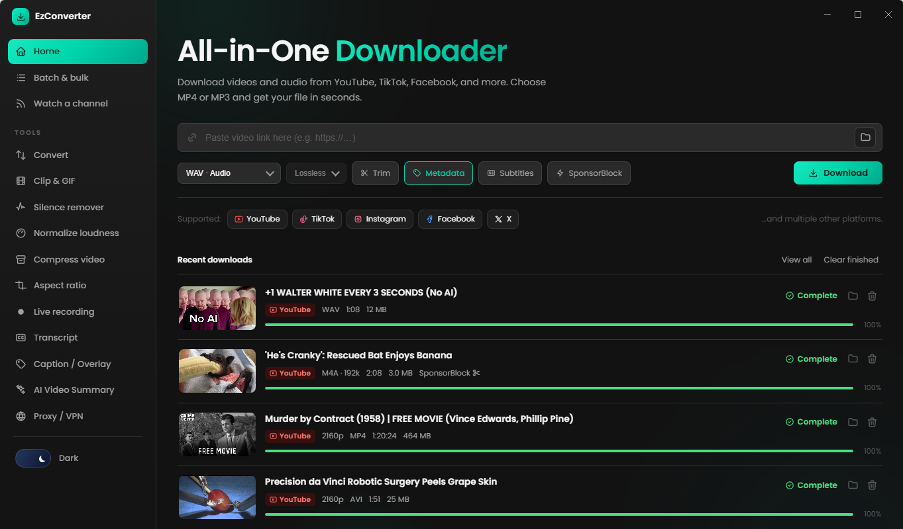
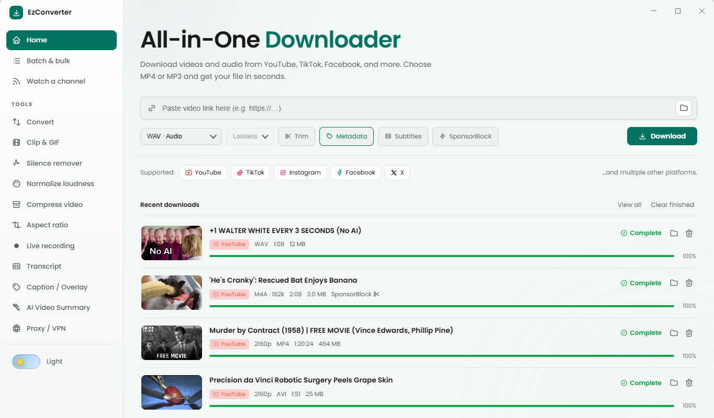
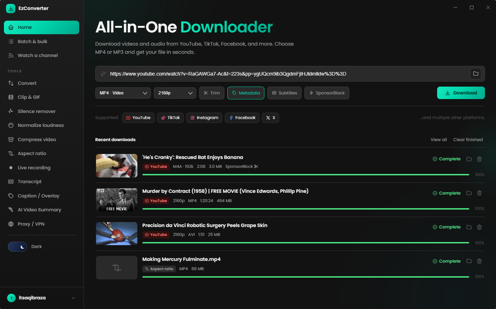

EZDL grabs video and audio from almost anywhere online, then
shapes it into exactly what you need: a clip, a clean podcast file,
a captioned cut. Free for your first 24 hours.
Windows today · installer signing in progress · macOS/Linux planned


Pulls from
YouTubeTikTokInstagramFacebookXTwitchVimeoRedditSoundCloud+ 1,750 more
Tool rack
One deck, twelve modules.
Every tool runs on the same queue, side by side, on your own machine: no upload step, no render limits.
TOOL / 00
From a pasted link straight to MP4 or MP3, at any quality the source offers, with tags, cover art, subtitles, and SponsorBlock trimming along for the ride.
Universal download
TOOL / 01
Paste a whole list of links, or a playlist URL, and queue every one of them up at once instead of one at a time.
Batch & bulk
TOOL / 02
Point it at a channel or playlist and it checks on a schedule, sorting new uploads into folders per channel, site, or date as they land.
Watch a channel
TOOL / 03
Any format in, any format out, video or audio, for files you've already got sitting on your PC.
Convert
TOOL / 04
Scrub to the in point, scrub to the out point, export the slice as an MP4, an animated GIF, or an audio snippet. Works on a local file or a pasted link.
Clip & GIF
TOOL / 05
Cuts the dead air out of a recording: long pauses, gaps between speakers, top-and-tail silence, before it ever hits your feed.
Silence remover
TOOL / 06
Two-pass EBU R128 loudness matching, with presets for streaming, podcast, and broadcast targets. Nothing in the feed is suddenly twice as loud.
Loudness normalize
TOOL / 07
Shrinks a file's size with a re-encode, hardware-accelerated on Nvidia cards so it doesn't eat the afternoon.
Compress video
TOOL / 08
Crop or pad a video to a target ratio like 9:16 or 1:1, dragging the frame over the preview to choose exactly what stays in shot.
Aspect ratio
TOOL / 09
Drop text or an image straight onto the frame, drag it into place, and set exactly when it fades in and out, watching the real footage as you go.
Caption & overlay editor
TOOL / 10
Points at an ongoing stream and keeps recording until you tell it to stop, or until the stream ends on its own. Runs quietly in the tray in the meantime.
Live recording
TOOL / 11
Grabs a video's manual subtitles if the uploader added them, otherwise auto-generated captions, as plain text, SRT, or VTT. No video or audio downloaded.
Transcript

Drop your screenshot atimg/spotlight-tool.png
No risk
24 hours free. No card, no catch.
Try every tool on the deck before you decide anything. If it earns a spot on your PC, upgrading takes one click. If not, you've lost nothing.
Free online converters make their money off your traffic, not your download — that's the ads, the fake "Download" buttons, and the upload you didn't ask for.
Online converter sites
EZDL
Uploads your video to a server
Yes, every time
Never — runs on your PC
File size / length limits
Common
None
Ads & fake download buttons
Usually
None
Downloads at once
One at a time
Up to 6 in parallel
Tools in one place
One converter, one job
12 tools, one queue
At a glance
What's actually in the box.
Fewer marketing words, more of what you're really deciding on.
12Tools, one queue
Convert, clip, compress, and the rest, without opening a second app.
1,750+Source sites
YouTube, TikTok, Instagram, and seventeen hundred more, one paste box.
0Upload steps
Everything runs on your own machine. Nothing leaves it.
1–6Parallel downloads
Set your own limit in Settings, from one at a time to six.
Get EZDL
Everything above. One download.
Convert, clip, compress, caption, and the rest, all in the same queue. Get EZDL for Windows and try it yourself.